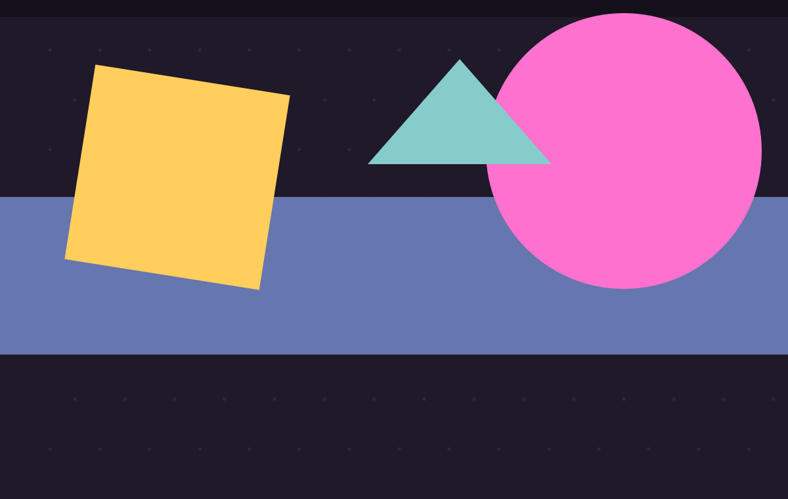
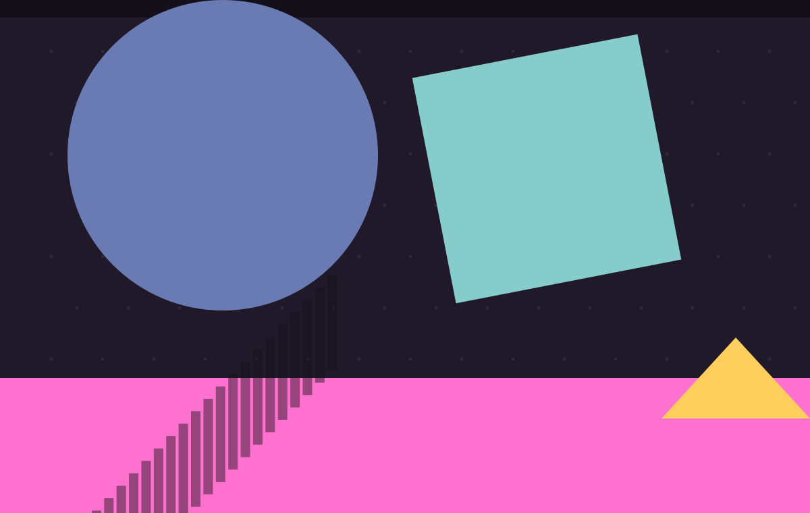
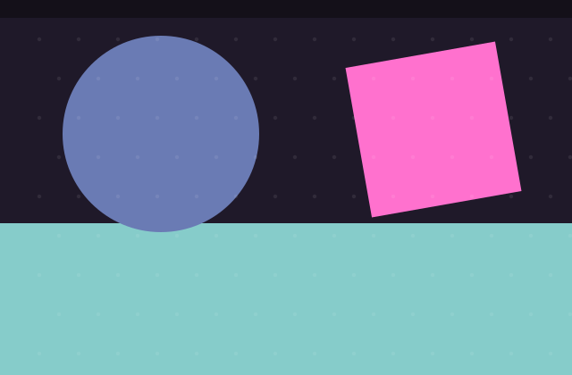
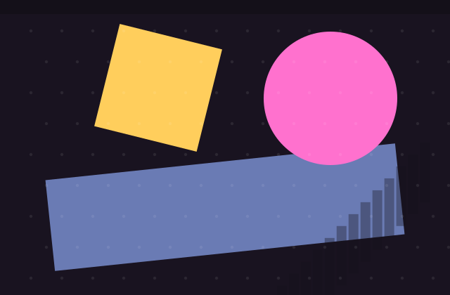

const blog = { title: 'Ryan', focus: 'LATEST', updated: '2026.09.22' } function latest() { return '文章标题一' }
const blog = { title: 'Ryan', focus: 'LATEST', updated: '2026.09.22' } function latest() { return '文章标题一' }

const blog = { title: 'Ryan', focus: 'LATEST', updated: '2026.09.15' } function latest() { return '文章标题二' }

const blog = { title: 'Ryan', focus: 'LATEST', updated: '2026.09.01' } function latest() { return '文章标题三' }

const blog = { title: 'Ryan', focus: 'LATEST', updated: '2026.08.20' } function latest() { return '文章标题四' }

const blog = { title: 'Ryan', focus: 'LATEST', updated: '2026.08.01' } function latest() { return '文章标题五' }
两个完整跑通的项目 · 从实时数仓到法律智能体
完整覆盖大数据离线 + 实时两条链路：Python 模拟订单数据源，经 Kafka 上报； Spark Streaming 做窗口聚合，Flume 自定义 Source 落盘 HDFS， Sqoop 把 MySQL 业务库同步进 Hive 中央仓库，最后 Flask + WebSocket + ECharts 实时可视化。
PollableSource 消费 Kafka 并扁平化拆解后写 HDFS
基于大模型的法律咨询 / 合同审查 / 诉讼文书生成一体化平台。
monorepo 结构：20+ 个可独立启动的微服务 + React 前端 + Scala 实时风控流处理，
公共能力抽到 shared/ 包统一复用。

这里是文章摘要,用一两句话概括文章内容,吸引读者点击阅读全文。

这里是文章摘要,用一两句话概括文章内容,吸引读者点击阅读全文。

这里是文章摘要,用一两句话概括文章内容,吸引读者点击阅读全文。
一句话认识一下
一名 iOS 开发工程师，日常以 Swift / Objective-C 为主，也喜欢折腾后端与大数据。目前正在系统学习全栈开发。
这个站点用来沉淀项目复盘和技术笔记，不追热点，只记自己踩过的坑。
了解更多 →